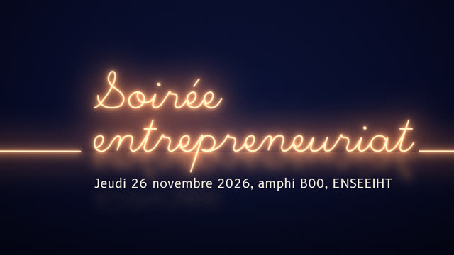
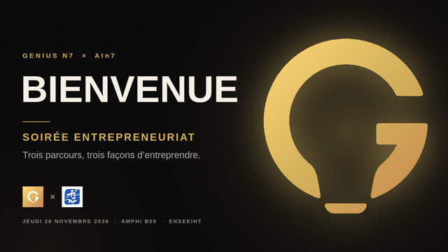
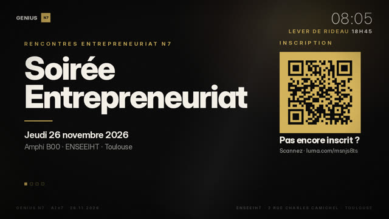
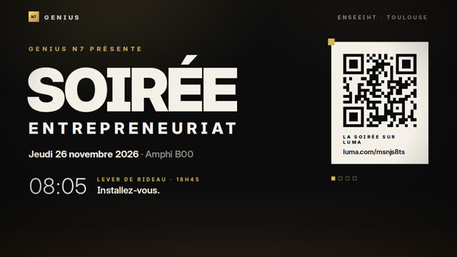
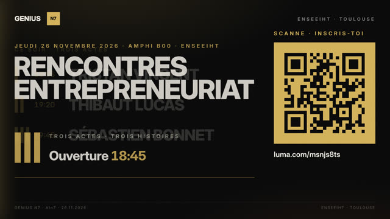
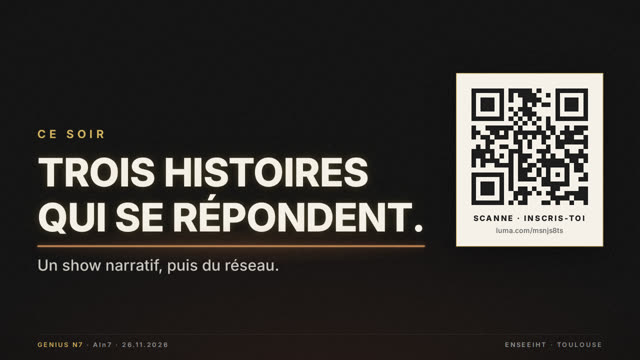

Écrans de la soirée entrepreneuriat
Genius N7 avec AIn7, jeudi 26 novembre 2026, amphi B00, ENSEEIHT. Toutes les propositions d'écran pour le grand écran derrière la scène. Ouvre une version, clique dedans, puis flèche droite pour avancer, flèche gauche pour revenir, F pour le plein écran. Sur téléphone : toucher à droite pour avancer.

Le fil
version proposéeUn fil incandescent trace l'ampoule Genius, puis écrit à la main le titre et le nom de chaque guest. Finit en or vers l'apéro.

Classique
diaporamaUn diaporama sobre de 16 diapositives, modifiable dans PowerPoint ou Google Slides : attente avec code d'inscription, programme, un titre par acte, partenaires, apéro.

Le carré
Le carré doré « N7 » de la charte traverse la soirée : il porte le code d'inscription, devient l'ampoule, puis le numéro de chaque acte.

Le sceau
Grandes lettres noir, crème et or, grain de pellicule. Le carré doré se pose en sceau sur chaque nom puis se retire pour le révéler.

Les trois barres
Les actes I, II, III dessinés en barres de lumière dorée, comme des projecteurs. À la fin, l'or inonde l'écran.

Sous tension
La soirée comme une mise sous tension : un trait de lumière court d'écran en écran, chaque acte allume son tube.